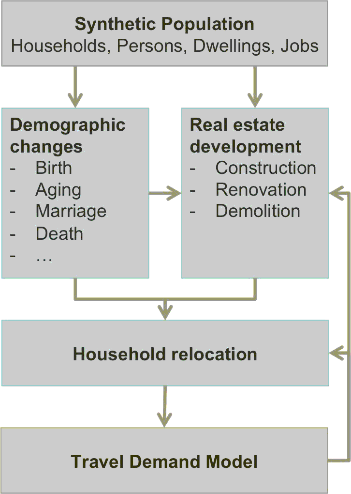

After a SILO run has been completed, three sets of output data are available:
The synthetic population that was created for the base year is updated every simulation period (commonly a simulation period is one year). After the model finished the final simulation period, an updated synthetic population is written out for that year.
The aggregate output file contains detailed information for the entire study area for every modeled year. Summaries include population by age and gender, housholds by household type, income and size, number of dwellings by dwelling type, average vacancy rates, etc. This file is written in csv format for easy reading in Excel or with a text editor.
The spatially detailed output file contains selected information by zone for every modeled year. Data include population, number of dwellings, available land for development, average housing price, and others.

SILO is designed to be closely integrated with a travel demand model.